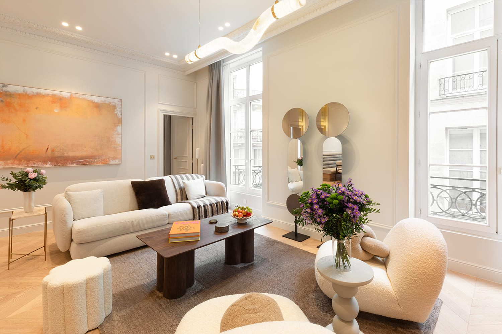
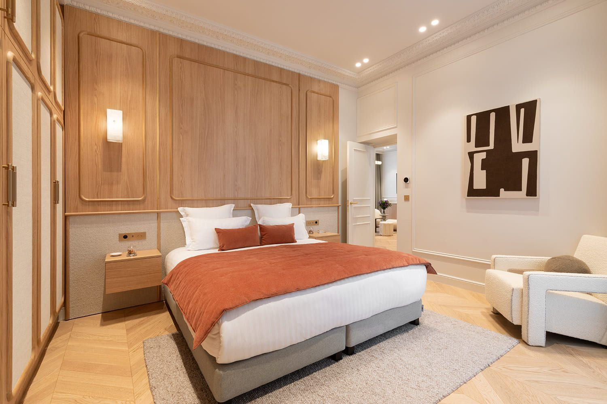
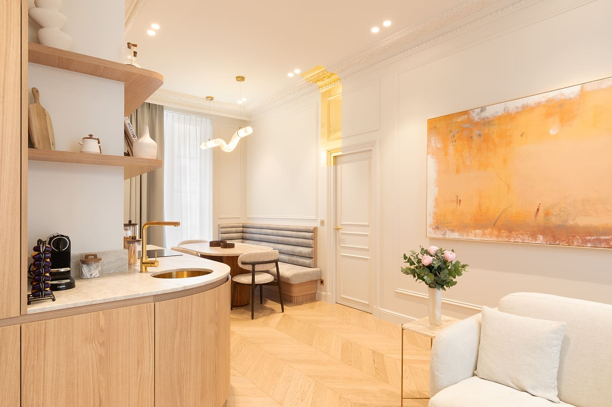
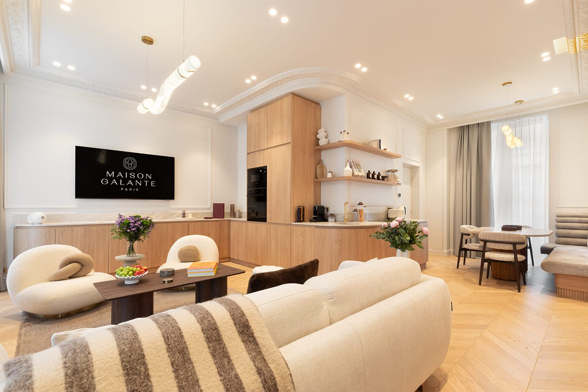
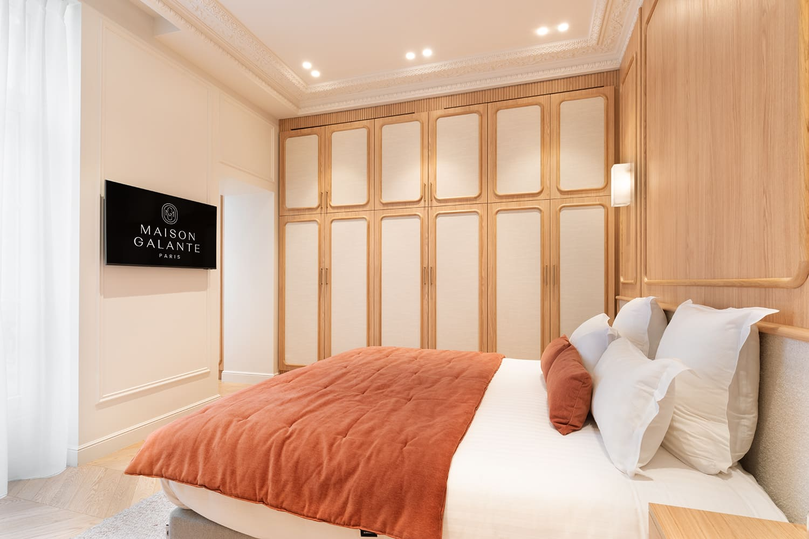
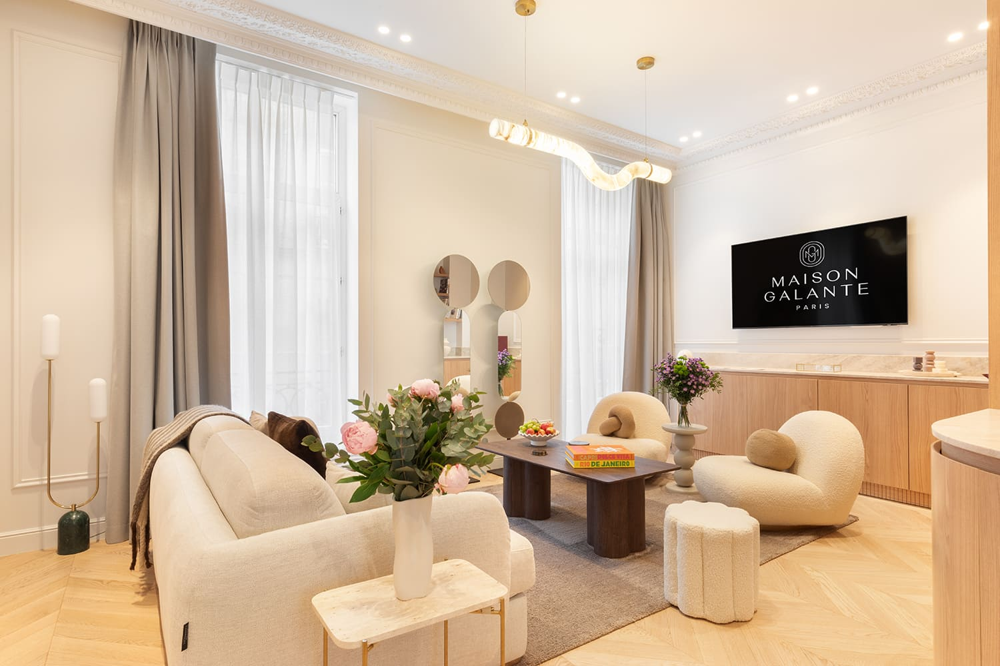

Paris 1er
Un bien de caractère aux Halles, repensé jusqu'à la structure. Ce qu'on a gardé est aussi précieux que ce qu'on a créé.






Aux Halles, dans le 1er arrondissement de Paris, cet appartement de 80 m² portait en lui un potentiel que seule une restructuration complète pouvait révéler. John Rozenblum, designer d'intérieur, est intervenu jusqu'à la structure : cloisons retirées, circulations repensées, hauteur sous plafond travaillée. Ce qui a été conservé — une poutre, une niche, une proportion — est aussi précieux que ce qui a été créé. Le résultat est un intérieur contemporain raffiné, dense en caractère malgré sa surface contenue. Un projet de rénovation à Paris où rien n'est laissé au hasard.
La rue des Déchargeurs, dans le 1er arrondissement, appartient au tissu ancien des Halles : parcelles étroites, immeubles profonds, fenêtres hautes donnant sur une rue calme à quelques mètres du plus grand échangeur de la ville. Sur 80 m², le bien avait du caractère mais un plan devenu illisible. La restructuration est descendue jusqu'à la structure pour retrouver des volumes justes. Le projet a été conduit pour Maison Galante Paris.
Les corniches, le parquet et les hauteurs ont été conservés ; le reste a été redessiné. C'est un équilibre difficile à tenir, parce qu'il est plus simple de tout refaire que de composer avec l'existant. Ici, chaque élément ancien conservé fixe une contrainte pour le neuf : la hauteur d'une corniche détermine celle des boiseries, le rythme des fenêtres celui des rangements.
Dans un plan étroit, l'angle droit se paie. La cuisine adopte donc une façade arrondie, doublée d'une banquette sur mesure qui épouse le même galbe : on la contourne au lieu de la heurter. Le mobilier du séjour suit la même logique — assises rondes en tissu bouclé, tables basses sans arête — et l'appartement se parcourt sans jamais buter sur un coin.
La palette est courte : chêne clair pour les boiseries et la cuisine, crème pour les tissus, terracotta pour les jetés de lit et une grande toile abstraite au-dessus du canapé. Ces trois valeurs suffisent à donner de la chaleur à un appartement orienté sur une rue étroite, et la peinture sert de source de couleur là où la fenêtre ne peut pas en apporter.
Déchargeurs rejoint les rénovations conduites dans le 1er arrondissement de Paris, aux côtés de Châtelet et de Louvres.
Ce projet fait partie des réalisations de design d'intérieur à Paris de John Rozenblum. Pour discuter d'un projet similaire ou d'une rénovation sur mesure, prenez contact.
Un projet ?
Chaque projet commence par une conversation. Partagez votre vision — je m'occupe du reste.
Prendre contact